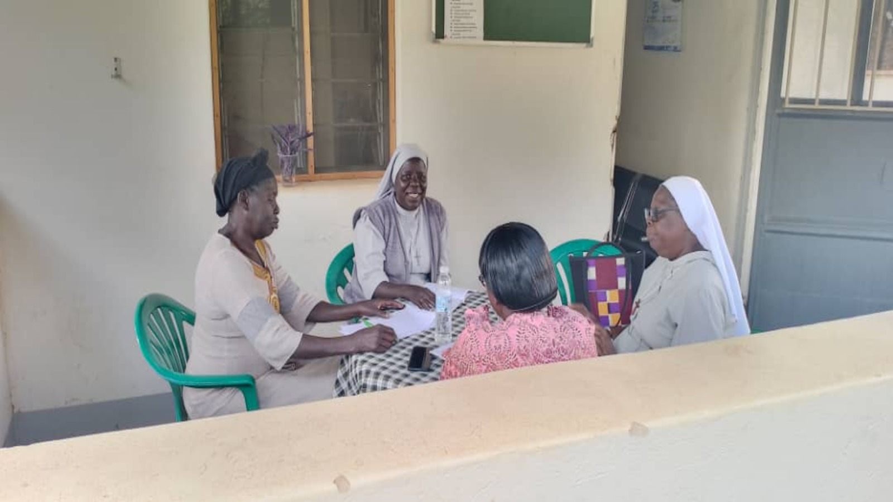
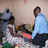
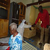

Education
Health education, guidance, and counselling through schools, churches, and community spaces.
St. Basil Palliative Home Care Promotion
We provide compassionate palliative home care, counselling, spiritual support, and practical guidance for families facing serious illness.
St. Basil Palliative Home Care Promotion reaches vulnerable people and families facing pressing psychosocial, physical, emotional, and spiritual health problems. Our work is rooted in compassionate presence, quality care, and the social teaching of the church.
To establish a model home offering spiritual and psychosocial services for people affected by life-limiting illnesses.
To improve quality of life with minimal pain, psychological distress, and spiritual stress.

Palliative care improves quality of life through early identification, assessment, and treatment of pain as well as physical, psychosocial, and spiritual needs.
Health education, guidance, and counselling through schools, churches, and community spaces.
Access to appropriate, affordable palliative and general healthcare services for vulnerable people.
Every family needs a response that is personal, practical, and steady. This pathway keeps care human while helping supporters understand where they can help.
Speak With UsWe understand the patient's situation, symptoms, family context, and spiritual or psychosocial needs.
We connect patients and caregivers to guidance, comfort measures, counselling, and referral support.
We continue accompaniment through home care, education, livelihood support, and bereavement care.
Chair
Coordinator
IT Manager
IT Consultant
Testimonials help families and partners see the value of palliative care through lived experience and community witness.

Monthly care visits and medical consultation connect patients to ongoing support and reassurance.
Sr. Leonora Torach Counselling Psychologist
A family welcome rooted in faith, service, and support for missionary vocation.
Omony's Family Community membersCopyright © St. Basil Palliative Home Care Promotion. All rights reserved.